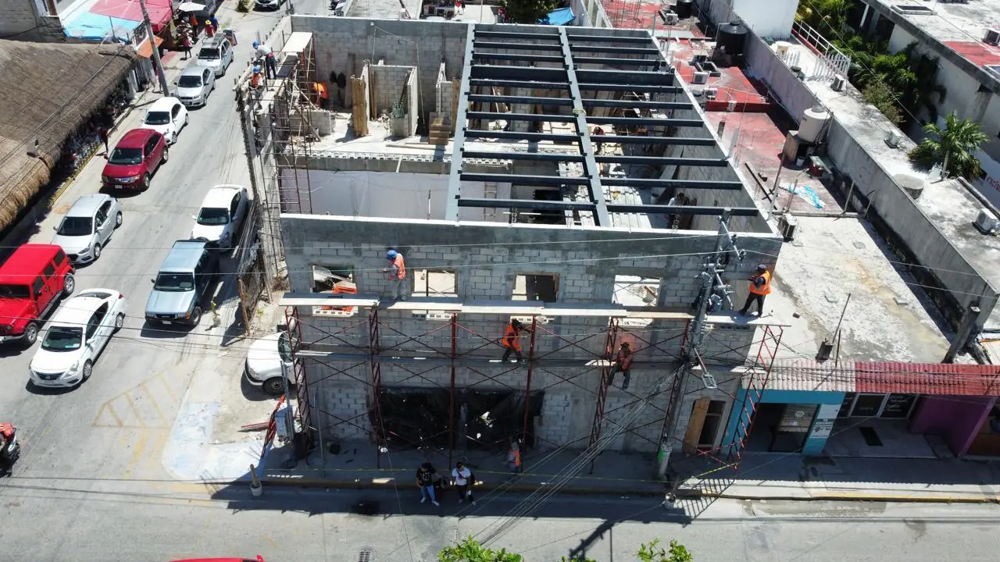

剥落的阳台、漏水的窗户、老化的屋面和生锈的栏杆让卡门海滩的酒店损失客房、口碑和保险条件；我们逐层修复并加固外壳。 一线海景酒店承受盐雾和马尾藻，内陆则湿度很高，每个屋顶泳池和露台都暴露在飓风下，防水和室外钢构老化比业主预期更快。

防风百叶、屋面设备锚固和排水。
可抵御飓风风压和飞射物的窗户和推拉门。
适应盐雾的弹性涂料和防碳化保护。
精品酒店全年周末和节假日满房，因此通常按客房区块分期施工，噪音作业安排在工作日 10 点至 18 点。 外部工程在这些窗口内按客房竖向单元分期，约定噪音时段，并为业主和保险公司提供照片报告。
我们的钢结构和木作车间就在卡门海滩，但第五大道周边的步行街意味着上午 9 点前卸货、最后几十米用手推车，并与邻居密切协调。 吊篮、脚手架和材料堆放按这些条件规划，不占用客区。
水电来自市政管网，老街区在旺季常显不足；员工住在西区各社区，通勤短但房租持续上涨。
| 工程 | 单位 | 成本（墨西哥比索） |
|---|---|---|
| 阳台 / 楼板边修补 | 每个阳台 | $8k–$26k |
| 抗冲击玻璃 | 每平方米窗 | $9k–$19k |
| 屋面防水 | 每平方米 | $470–$1,200 |
相关页面： 卡门海滩酒店服务 · 卡门海滩酒店开发管理 · 卡门海滩品牌转换与 PIP · 卡门海滩酒店建造 · 酒店造价计算器
相关服务： 卡门海滩酒店服务 · 卡门海滩酒店开发管理 · 卡门海滩品牌转换与 PIP · 卡门海滩机电与能源 · 卡门海滩厨房与洗衣房 · 卡门海滩宴会厅与活动场地 · 卡门海滩消防与无障碍 · 卡门海滩员工宿舍 · 卡门海滩酒店可持续 · 卡门海滩维护与重建 · 卡门海滩酒店建造 · 酒店造价计算器 · 酒店服务 — Riviera Maya